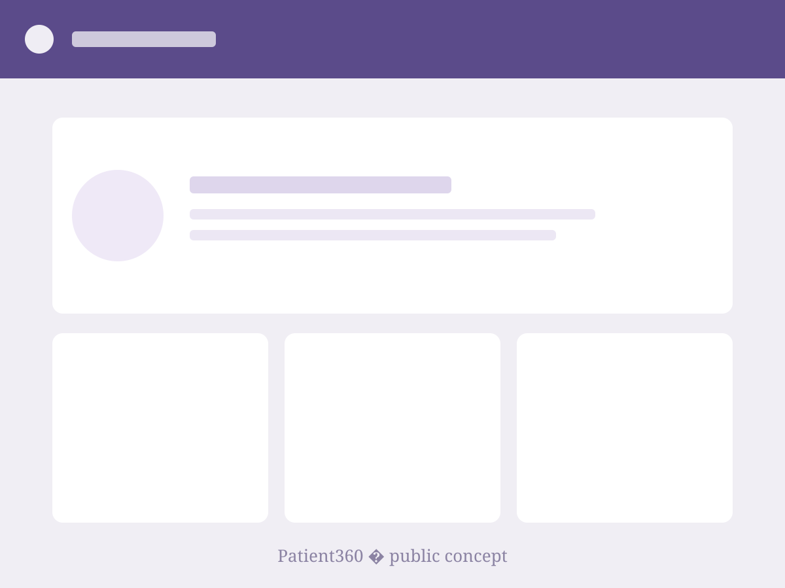
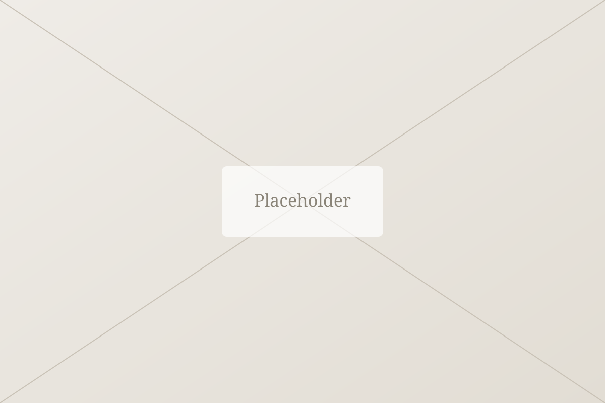

Self-initiated · Public
Patient360: the whole story a care team needs, in one calm view.
A self-initiated concept that takes the Customer360 pattern into healthcare — built end-to-end so I can show every decision, not just describe it.

The problem
Care teams juggle too many systems.
Fragmented history
Vitals, notes, meds, and labs live in separate tools that rarely talk to each other.
Cognitive load
Clinicians reconstruct the patient story under time pressure, raising the risk of missed detail.
Anxious moments
The interface adds stress precisely when calm and clarity matter most.
Approach & goals
Design principles I set for myself.
Calm by default
Quiet visuals, generous space, and a clear hierarchy that reduces cognitive load.
Story-first
A single timeline that reads like a narrative, not a database dump.
Safe at speed
Critical info is glanceable; destructive actions ask twice.
Context
Why I built it.
My best enterprise work is confidential, which makes it hard to show craft in full. Patient360 is my answer: a public, self-initiated project that mirrors the same class of problem so I can walk through every screen and rationale openly.
All data shown is fictional. No real patient information is used anywhere in this concept.
- Core problemFragmented clinical data across tools
- Core problemHigh cognitive load in time-critical moments
- GoalA single calm, trustworthy patient view
Process
Six weeks, one loop.
- 01
Understand
Read public research on clinical workflows and EHR frustration.
- 02
Frame
Focused on one job: “help me understand this patient in 30 seconds.”
- 03
Explore
Sketched five timeline concepts, then narrowed to two.
- 04
Validate
Tested with 5 people using a task-based prototype walkthrough.
- 05
Ship
Built a polished, responsive prototype and documented the decisions.
Before / after
From dashboard to narrative.
Dense grids and tabs that treat every data point as equally important. The clinician does the prioritizing.
A prioritized timeline with the “need-to-know now” surfaced first, and detail one tap away.
Outcomes
From the concept test.
Illustrative placeholders for this draft.
Screen concepts
The full walkthrough.

Closing
What it demonstrates.
End-to-end craft
Research through polished prototype, all in the open.
Systems thinking
The same unified-record pattern behind my confidential work.
Point of view
A clear, opinionated stance on calm, trustworthy UI.